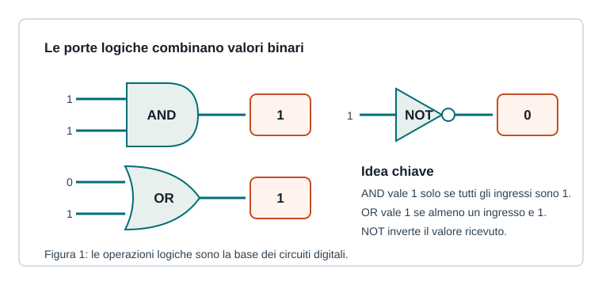

Capitoletto 1.2
Codifica e logica digitale
I circuiti digitali elaborano bit applicando regole logiche: da queste regole nascono confronti, somme, controlli e decisioni dell'hardware.

Algebra booleana
L'algebra booleana lavora con due valori, vero/falso oppure 1/0. Le operazioni principali sono AND, OR e NOT. Queste operazioni permettono di descrivere condizioni logiche, controlli e circuiti.
Il circuito fisico usa tensioni elettriche, ma il progetto si studia con un modello astratto: livello basso uguale a 0, livello alto uguale a 1.
Porte fondamentali
| Porta | Risultato | Uso tipico |
|---|---|---|
| AND | 1 solo se tutti gli ingressi sono 1 | due condizioni obbligatorie |
| OR | 1 se almeno un ingresso è 1 | una condizione sufficiente |
| NOT | inverte il valore | negazione |
| XOR | 1 se gli ingressi sono diversi | somma binaria senza riporto |
Tabelle di verità
Una tabella di verità elenca tutte le combinazioni degli ingressi e l'uscita corrispondente. È il modo più ordinato per verificare se una funzione logica è stata descritta correttamente.
| A | B | A AND B | A OR B | A XOR B |
|---|---|---|---|---|
| 0 | 0 | 0 | 0 | 0 |
| 0 | 1 | 0 | 1 | 1 |
| 1 | 0 | 0 | 1 | 1 |
| 1 | 1 | 1 | 1 | 0 |
Circuiti combinatori e sequenziali
Un circuito combinatorio produce uscite che dipendono solo dagli ingressi attuali. Un circuito sequenziale, invece, contiene memoria: l'uscita dipende dagli ingressi e dallo stato precedente.
Un comparatore è combinatorio: confronta due numeri e indica se sono uguali. Un registro è sequenziale: conserva bit fino al successivo impulso di clock.
Ripasso
A cosa serve una tabella di verità?
A descrivere il comportamento di una funzione logica per ogni combinazione possibile degli ingressi.
Qual è la differenza tra combinatorio e sequenziale?
Il combinatorio non conserva stato; il sequenziale usa memoria interna e clock.